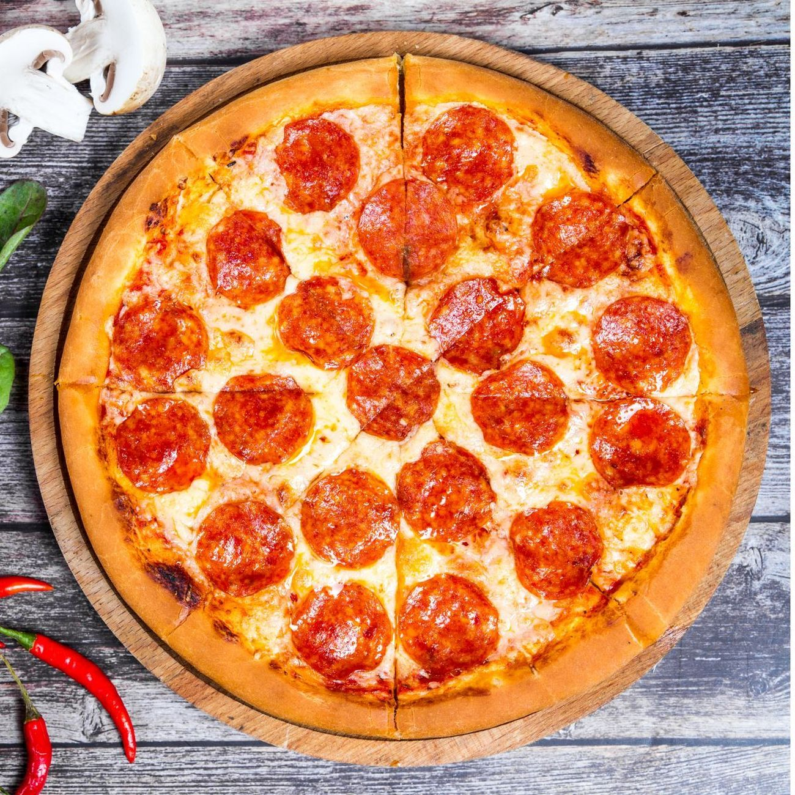
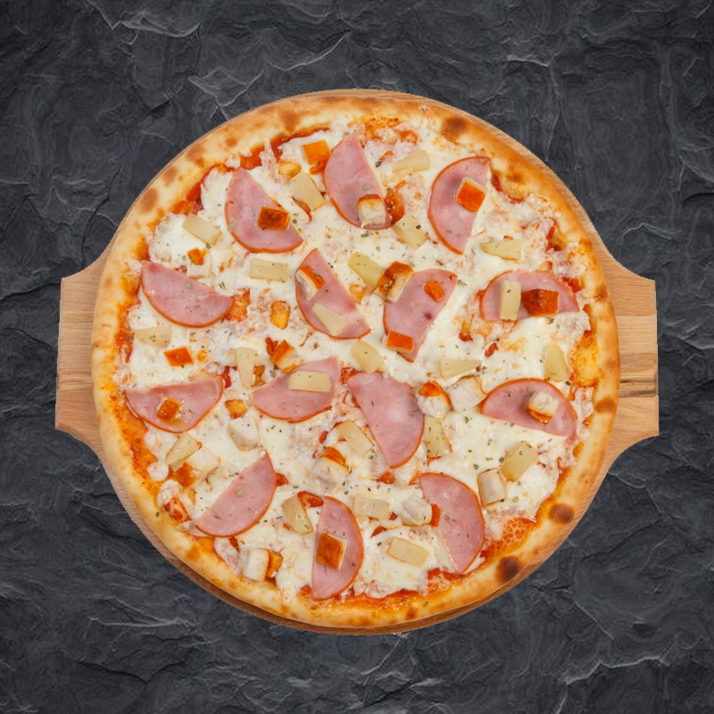
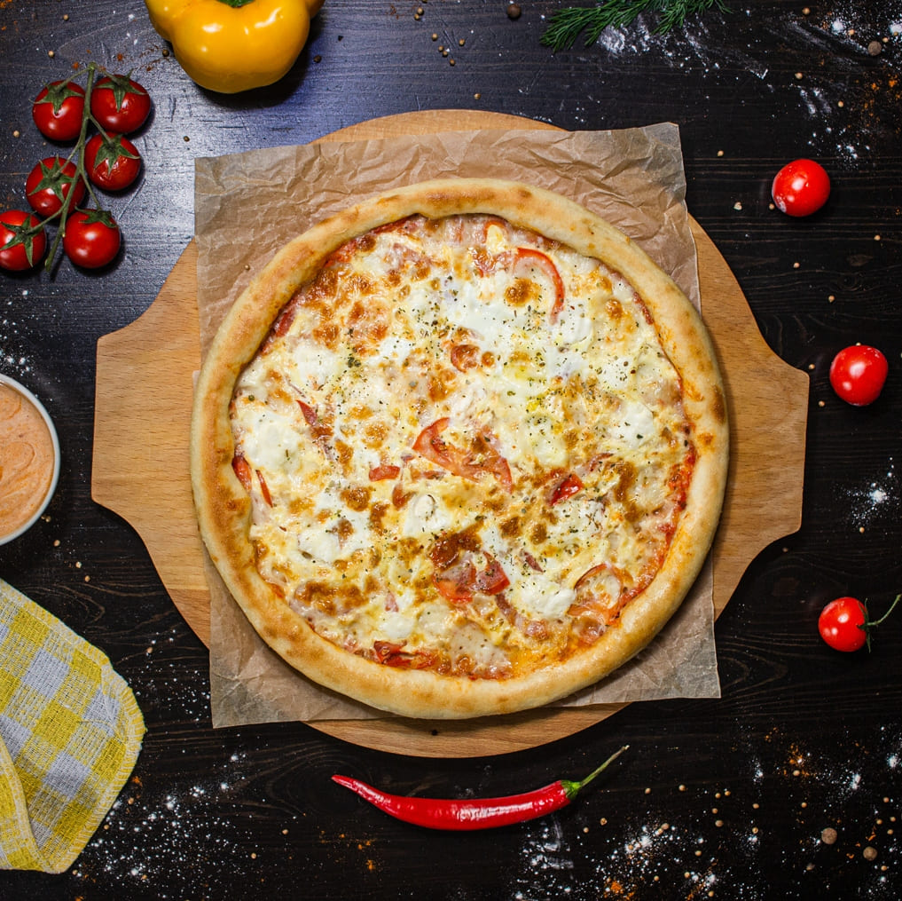
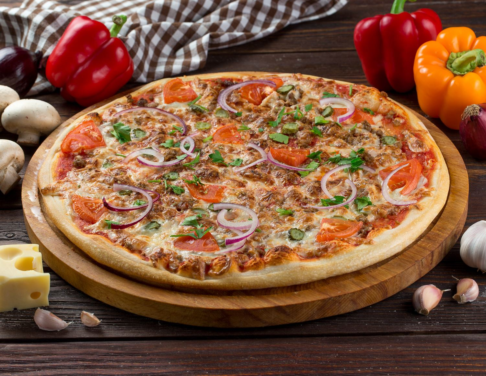
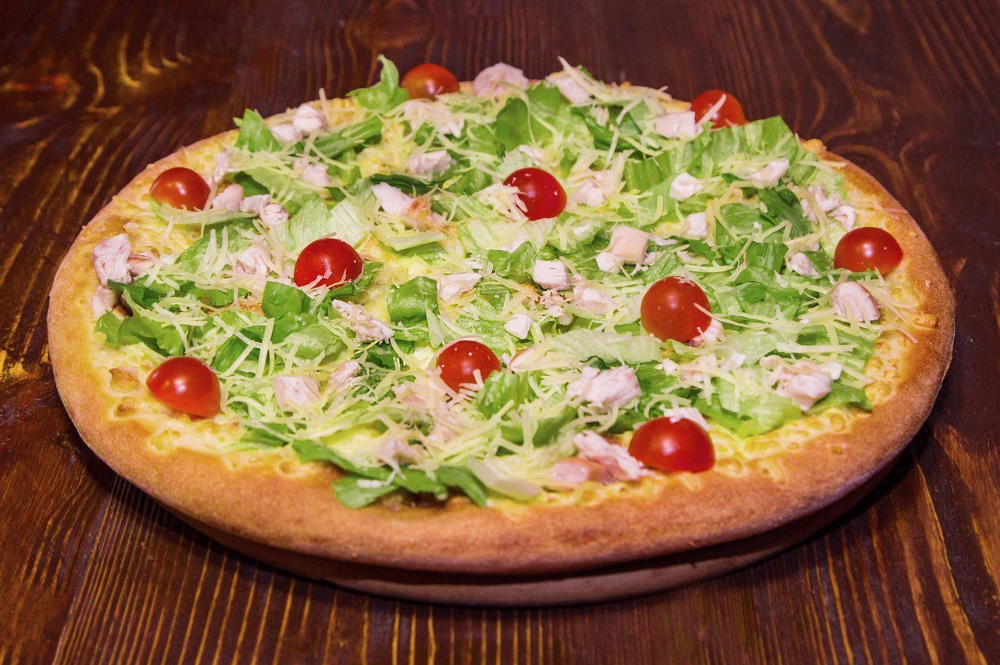
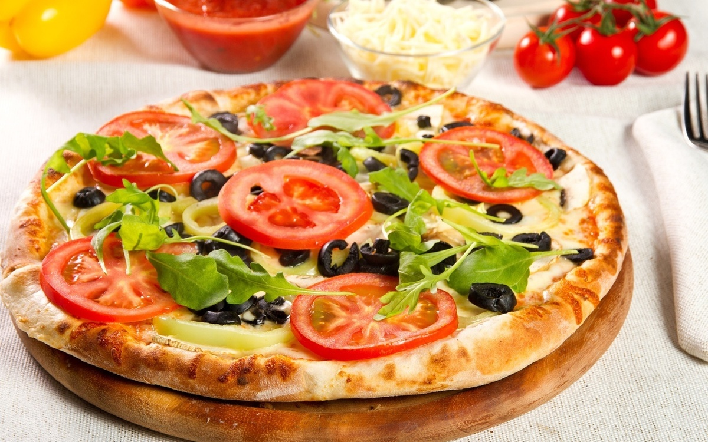
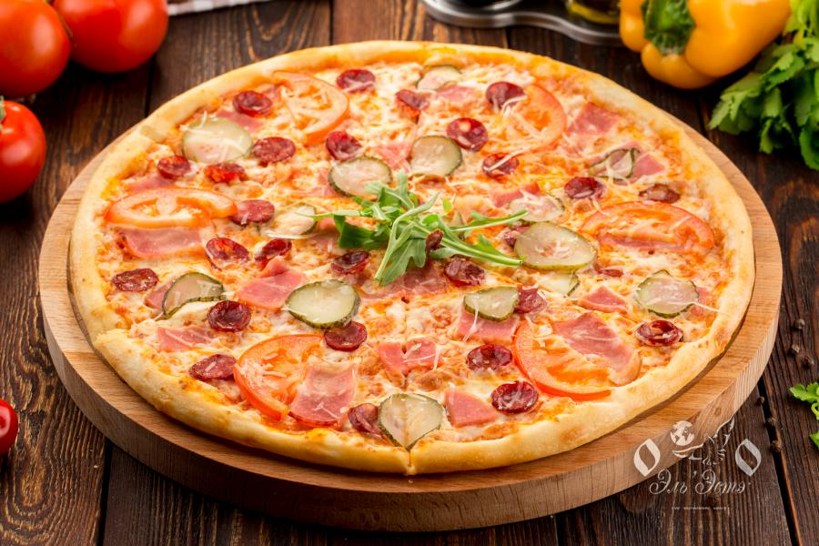

Самые известные виды пицц в России:
Популярная современная легенда гласит, что архетипическая пицца «Маргарита» была изобретена в июне 1889 года, когда Королевский дворец Каподимонте поручил неаполитанскому пиццайоло (пиццеру) Рафаэле Эспозито создать пиццу в честь приехавшей сюда королевы Маргариты . Из трех разных пицц, которые он создал, королева предпочла пиццу, окрашенную в цвета итальянского флага — красный (помидор), зеленый (базилик) и белый (моцарелла).

Маргарита
Термин пеперони (peperoni) — это заимствование, множественноe число от итальянского слова peperone, которое означает болгарский перец. В то же время в континентальной Европе пеперони — это и есть слово, обозначающее различные виды стручкового (болгарского) перца, в том числе паприки и маленьких острых, часто маринованных, перцев, известных как «паприка, острый красный перец» (итал. peperoncino) или «сладкий пикантный перец» (итал. peperone piccante) в Италии. В США — это pepperoncini или банановые перцы. В итало-американской кухне это слово стало обозначать острую колбасу. Первое упоминание слова пеперони для обозначения колбасы относится к 1919 году. Чтобы заказать американскую версию пеперони в Италии, нужно просить salame piccante или salamino piccante (острое салями, распространённое в Калабрии). Итальянское название пиццы с пеперони — это pizza alla diavola (с острой колбасой).

Пепперони
Канадец греческого происхождения Сэм Панопулос (1934—2017) утверждал, что придумал гавайскую пиццу и впервые приготовил её в ресторане «Satellite» в Чатеме, Онтарио, Канада, в 1962 году. На основе своего опыта приготовления китайских блюд, в которых обычно сочетаются сладкие и солёные ингредиенты, Панопулос экспериментировал с добавлением ананаса, ветчины, бекона и других видов начинки, изначально не являвшихся особенно популярными для приготовления пиццы. Рецепт, предполагающий добавление ананаса к традиционной для пиццы смеси томатного соуса и сыра с использованием ветчины либо бекона, вскоре получил популярность в Канаде, а затем распространился по пиццериям многих стран мира. Панопулос выбрал название «гавайская» в честь марки консервированного ананаса, который использовал для приготовления блюда.

Гавайская
В отличие от других пицц, таких как неаполитанская или маргарита, которые имеют давнюю, богатую и задокументированную историю, Quattro Formaggi, несмотря на свою популярность, имеет менее ясное происхождение, в том числе из-за того, что её состав достаточно банален. Считается, что вид пиццы возник в регионе Лацио в начале XVIII века. Его менее очевидные и более поздние версии, такие как пицца Quattro Latti, могут иметь свой ход развития в истории гастрономии.

Сырная
Традиционное итальянское блюдо в виде тонкой круглой лепёшки из дрожжевого теста, выпекаемой с уложенной сверху начинкой из томатного соуса, кусочков сыра, мяса, овощей, грибов и других продуктов.

Мясная
Пицца-бургер Фирменная внешне напоминает популярное блюдо фастфуда. Такое угощенье скорее относится к полноценным вторым блюдам, нежели к бутербродам. Начинка в виде говяжьей котлеты, свежих помидоров, соленых огурчиков и сыра быстро утоляет голод.

Бургер
Тонкое традиционное тесто, изысканный соус-цезарь, отборный свежий салат айсберг, сочная куриная грудка, нежный, таящий во рту, сыр моцарелла 🧀 сочные спелые помидорки «черри» и неповторимый сыр пармезан.

Цезарь
Пицца Овощная (вегетарианская) – вкусное и полезное блюдо. Начиная из сочных свежих овощей и зелени, ароматный сыр, хрустящее тесто – все это создает уникальную комбинацию, которая понравится ценителям итальянской кухни. В семейной пиццерии Cipollino на Подоле пиццу с овощами готовят увлеченные своим делом пиццайоло.

Овощная
Начинка пиццы «Деревенская» отличается своим многообразием. В ней можно найти сразу два вида лука (красный и репчатый), бекон, свинину и свежие шампиньоны. Особую пикантность блюду придает ароматный чеснок, вкус которого призван уменьшать сыр Моцарелла.
